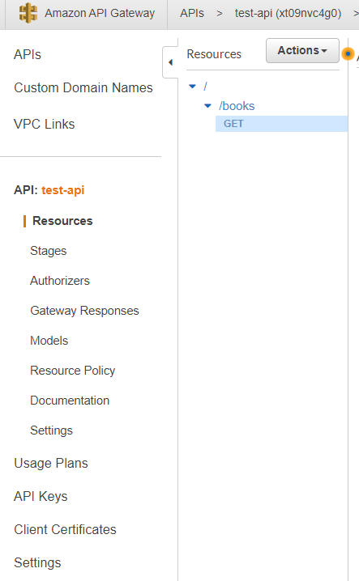

Left side menu
Some details for the menu options on the left:

- APIs - this list of APIs we have
-
Custom Domain Names - we can select different domain name than
what we had autogenerated, when creating the API
- VPC Links
-
API: my-api
- Resources - resources are the paths in our url
-
Stages - stages are snapshots of our API. Everytime we
deploy with the Actions button our API we create stage tracking
our changes
-
Authorizers - they allow us to create authentication for
our API
-
Gateway Responses
-
Models - here we create the shape of the data for our api,
for example as json
- Resource Policy
-
Documentation - useful especially if we share our api with
other developers
- Settings
- Usage Plans
-
API Keys - by clicking the Actions button select
Create API Key. Give it a name you want and optionally
description. The API key can be auto generated or you have custom one
then provide by checking the Custom button
- Client Certificates
-
Settings - here we manage the roles and permissions for our
service, because by default each service in AWS has no permissions at
all